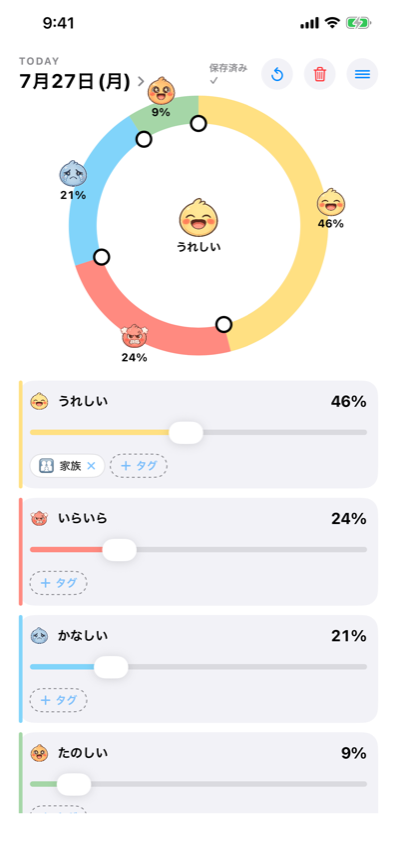
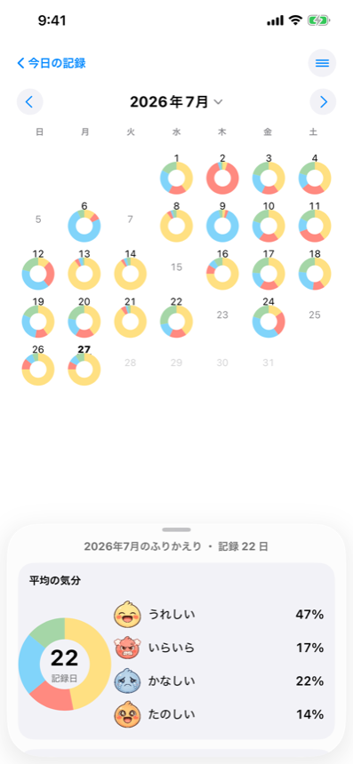
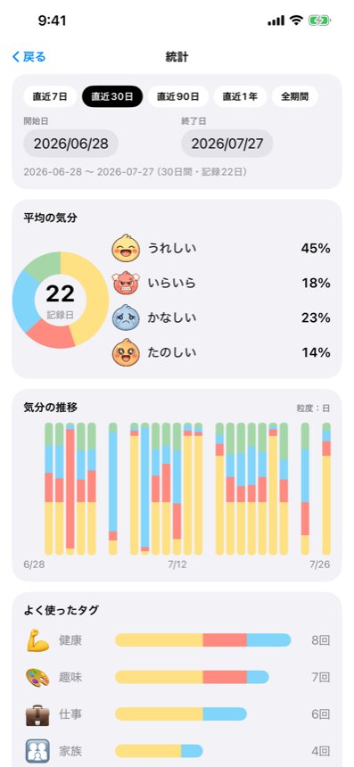
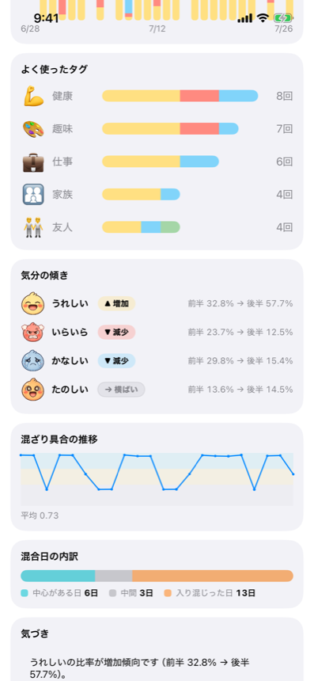
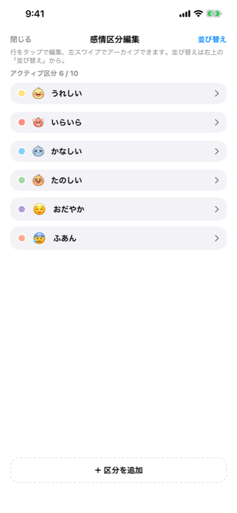

うれしいも、いらいらも、同じ日の中に混ざっている。
エモ日は、その日の気分を「割合」で記録する日記です。
文章は書きません。
気分の記録アプリの多くは「今日はどれ？」と、ひとつ選ばせます。
割合そのものを入力する、というやり方です。あとから統計で円グラフになるのではなく、 入力の時点で「その日の混ざり具合」を残します。
文章を書く欄はありません。書かないことを選んでいます。


カレンダーには、その日の割合がそのままミニ円グラフで並びます。月ごとのまとめ（平均の気分・推移・よく使ったタグ）も無料で見られます。
データを守る仕組みと、振り返りの深さ。
同じ Apple Account の端末どうしで同期します。機種変更や再インストールでも記録は残ります。データを守る機能は、有料の裏に置いていません。
暦月にとらわれず、開始日と終了日を選んで集計できます。期間の長さに応じて、推移グラフの粒度が日・週・月・3か月・6か月・年へ自動で切り替わります。


各感情の比率が増えているか、横ばいか、減っているか。そして、その日の気分がどれくらい「混ざっていた」か。今の期間と、直前の同じ長さの期間との比較も見られます。
割合で記録しているからこそ出せる見え方です。ひとつ選ぶ記録からは作れません。
感情の区分を 1〜10 個の範囲で追加・編集できます。アイコン・名前・色・並び順を変更でき、最初から入っている4つ（うれしい／たのしい／かなしい／いらいら）も編集できます。
使わなくなった区分を外しても、過去の記録は壊れません。当時の割合はそのまま残ります。

傾きや混ざり具合の説明文は、計算結果をそのまま言葉にした事実の記述です。AI は使っていません。 「〜の比率が増えています」といった観察までを表示し、良い・悪いの判断や、こうすべきという提案はしません。
まだ作っていないのではなく、入れないことを選んでいる機能です。
買い切りです。月額・年額の課金はありません。一度購入すれば、感情区分のカスタムと高度分析（任意期間の集計＋比率の傾き）の両方が使えます。購入の復元にも対応しています。
記録・カレンダー・月ごとのまとめ・iCloud 同期は、Pro でなくても使えます。